Official MakeCode Blocks
This page explains the official MakeCode blocks used by the supplied programs. Each block is introduced on its own. How several blocks are combined is explained separately in Programming Examples.
Important
Official blocks are available in a new micro:bit MakeCode project without installing an extension. Blocks that directly control the car are listed separately in LAFVIN Extension Blocks.
Before You Start
Click a field with a down arrow to open the choices shown below the block.
The picture inside
show iconalso opens a picture menu.Click a white number to type a value. A white number is not a dropdown.
1. Basic
on start
{kind=link}
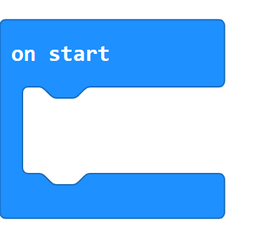
on start runs once when the micro:bit starts or is reset. Put preparation
steps inside its open space. MakeCode provides one on start block for the
main program.
forever
{kind=link}
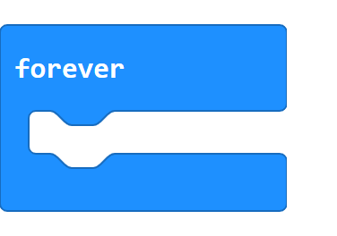
forever repeats the blocks inside its open space until the micro:bit is
reset or switched off. It is used when a program must keep checking or
updating something.
show icon
{kind=link}
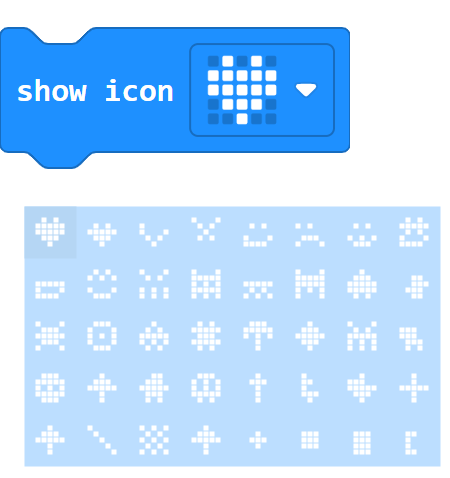
Click the picture to open the built-in icon menu.
show icon draws the selected 5 by 5 picture on the micro:bit LED display.
The menu contains hearts, faces, animals, objects, music symbols, arrows, and
simple shapes. The highlighted picture is the one that the block will show.
show number
{kind=link}
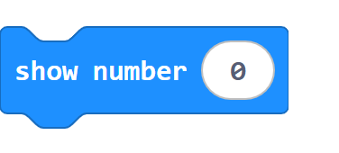
show number displays a number on the micro:bit. A single digit appears at
once; a longer number scrolls across the LED display. Replace the white number
with another number-producing block when needed.
pause (ms)
{kind=link}
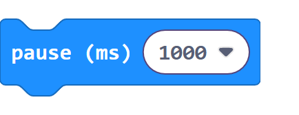
pause (ms) waits before the next block runs. The value is measured in
milliseconds: 1000 milliseconds equals one second.
clear screen
{kind=link}
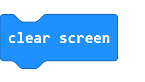
clear screen turns off every light on the micro:bit’s LED display. It does
not stop the rest of the program.
2. Input
{kind=link}
light level
{kind=link}
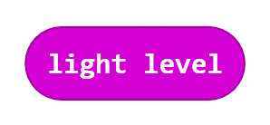
light level reports a number from 0 for dark to 255 for bright.
Its rounded shape shows that it produces a value and fits inside another
block’s rounded input.
3. Loops
repeat
{kind=link}
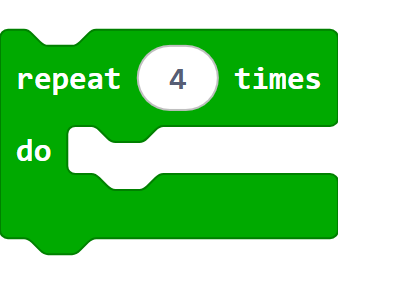
repeat runs the blocks inside it a fixed number of times. Change the white
number to choose the number of repetitions.
for index from ... to ...
{kind=link}
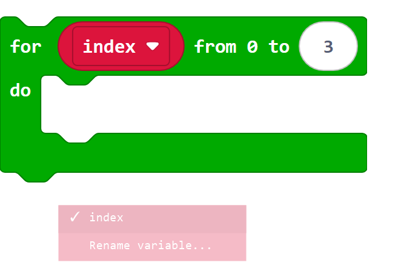
Click index to view or rename the loop variable.
This loop counts from a starting number to an ending number. The variable
index holds the current count and changes once on every pass. Both end
numbers are included. Rename variable... changes the variable name but
does not change how the loop counts.
4. Logic
if / else
{kind=link}
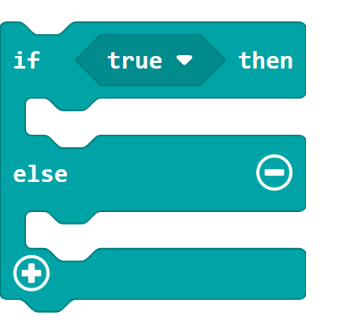
if checks a true-or-false condition. The first open space runs when the
condition is true; else runs when it is false. The plus and minus buttons
add or remove branches. An added else if branch checks another condition
only when the conditions above it were false. Use else if when a program
must choose between three or more possible actions.
Comparison
{kind=link}
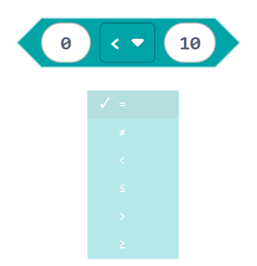
Click the middle symbol to choose how two values are compared.
A comparison reports true or false:
=means equal to, and≠means not equal to.<and≤mean less than and less than or equal to.>and≥mean greater than and greater than or equal to.
and
{kind=link}
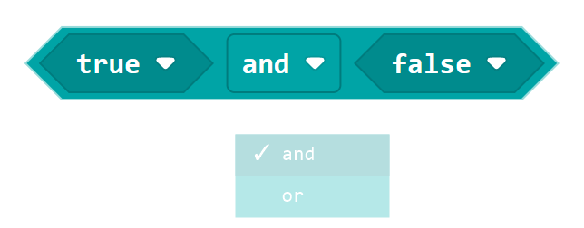
Click and to choose how two conditions are joined.
andreports true only when both conditions are true.orreports true when either condition is true.
5. Variables and Math
set variable to
{kind=link}
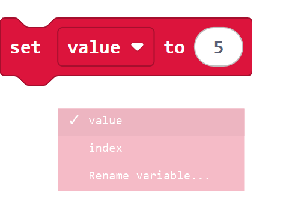
Click the variable name to choose one of the variables in the project.
set variable to stores a value in the selected variable. A new set
operation replaces the value that was stored before it. value and
index in the picture are sample variable names; the menu changes when you
create or rename variables.
change variable by
{kind=link}
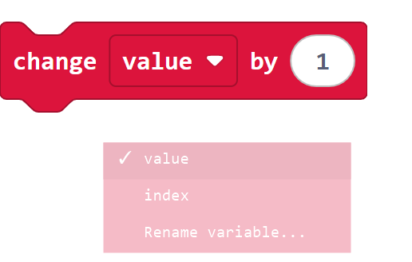
Click the variable name to choose which stored value will change.
change variable by adds an amount to the current value. Use a negative
amount, such as -1, to subtract. Its variable menu works in the same way
as the menu in set variable to.
Variable value
{kind=link}
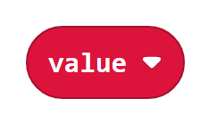
The rounded variable block reports the value currently stored in that variable. It has no dropdown arrow: drag the variable name you need from the Variables category.
Subtraction
{kind=link}
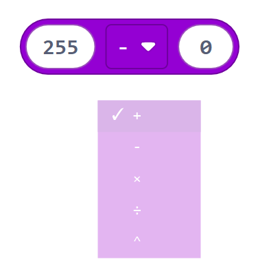
Click the middle symbol to choose a Math operation.
The choices are addition +, subtraction -, multiplication ×,
division ÷, and powers ^. The block calculates the two inputs and
reports the result.
6. Music
play tone ... for ... beat
{kind=link}
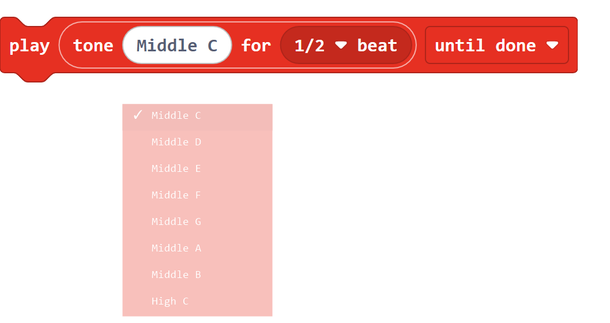
Click Middle C to choose the musical note.
{kind=link}
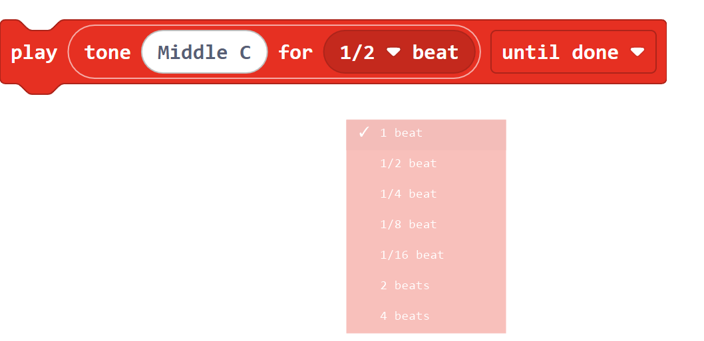
Click 1/2 beat to choose how long the note plays.
{kind=link}
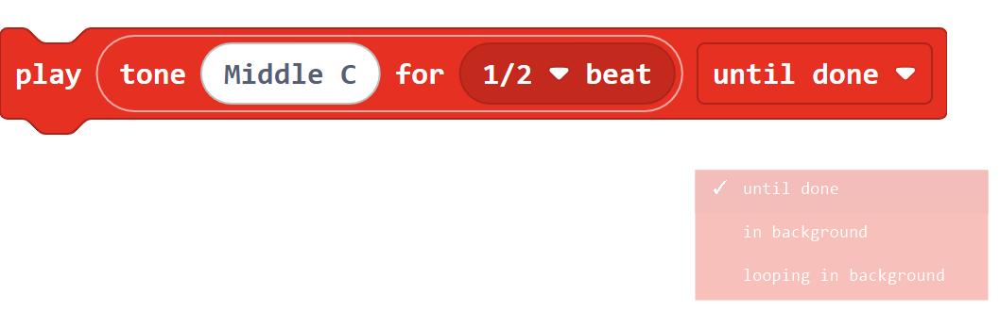
Click until done to choose what the program does while music plays.
This block plays one musical note:
The first field chooses the pitch.
The beat menu chooses the note length.
until donewaits before the next block runs.in backgroundlets the next block run immediately.looping in backgroundrepeats the sound until another music block stops or replaces it.
Continue with LAFVIN Extension Blocks for the car-specific blocks, or open Programming Examples to see complete programs.